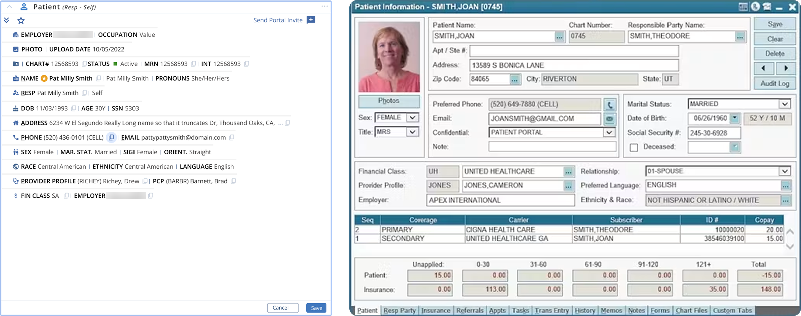
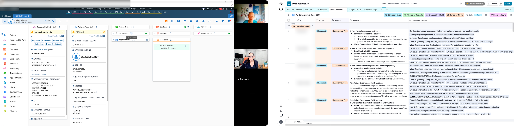
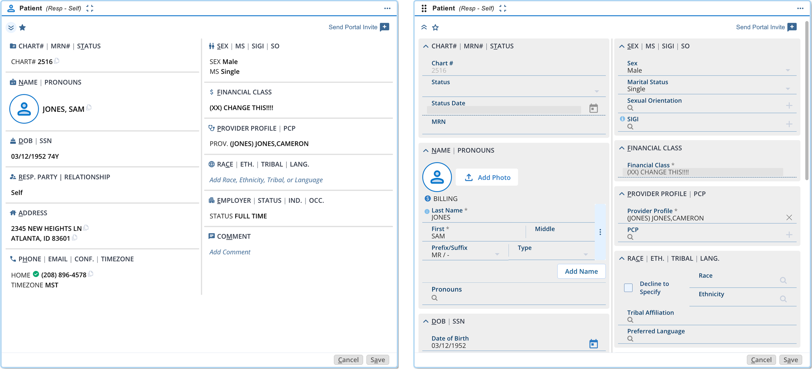

01 — The Starting Point
I inherited a direction already in motion.
When I returned to AdvancedMD, the Patient Demographics redesign had already been designed and approved. I took over the project from my UX director as it moved toward development and release.
The redesign replaced a dense legacy demographics screen with a modular card framework intended to make patient information easier to organize and establish a reusable pattern across the patient chart.

02 — What We Missed
Beta didn't show us the whole picture.
Early beta sessions were encouraging. But the cohort skewed toward smaller practices and intake-focused workflows. We hadn't adequately tested the design with billing and coding users who worked in Patient Demographics for hours at a time.
Once the redesign reached GA, those users made the gaps clear.
Too much hunting
Information that had been visible at a glance now required expanding and scrolling.
Too much clicking
Collapsible sections interrupted keyboard-driven data entry.
Not enough density
The cleaner presentation made it harder for experienced users to scan large amounts of patient information quickly.
03 — The Response
Go back to the people we missed.
Rather than defend the redesign or simply revert to legacy, I went directly to the users whose workflows hadn't been adequately represented in beta.
I conducted nine structured sessions with billing, coding, and operations users, working through their actual workflows and testing possible changes as we went.
The goal wasn't to defend the redesign. It was to understand why it wasn't working.

04 — The Turning Point
The answer showed up in the session.
During one session, I started manipulating the cards with the user to understand what was making the information difficult to read.
When we reached a simpler single-column presentation, she found the information much easier to scan.
That gave me a direction: preserve the stronger grouping and readability, but use the available width to bring more information back into view.
I took the idea to our lead developer. The change was feasible without rebuilding the card, so we pushed for an iteration that introduced clearer labels and a two-column layout.

05 — The Correction
Fix what failed. Keep what worked.
We didn't throw away the card architecture. We focused the iteration on the problems research had exposed.
Two-column layout
More patient information visible without returning to the dense legacy form.
Required fields only
High-volume users can focus data entry on the fields that matter.
Keyboard flow
Expanded sections restore tab-through entry without requiring constant mouse interaction.
Stronger hierarchy
Labels, values, and related information are easier to distinguish.
Those changes, along with several smaller workflow corrections, were incorporated into the final design.
Support calls and customer ideas about Patient Demographics dropped dramatically after the iteration shipped.
06 — The Lesson
Sometimes the redesign needs a redesign.
The strongest lesson wasn't that the original direction was wrong. It was that our beta hadn't represented the people with the most demanding workflows.
Once those users were in the room, the problems became much easier to understand — and the solution didn't require throwing away the work we'd already done.
Good UX isn't getting it right the first time. It's recognizing when you didn't — and knowing what to do next.